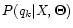
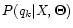
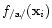

Subsections
A-priori class probabilities
Load data from file ``vowels.mat''. This file contains a database of
2-dimensional samples of speech features in the form of formant
frequencies (the first and the second spectral formants, ).
The formant frequency samples represent features that would be
extracted from the speech signal for several occurrences of the vowels
/a/, /e/, /i/, /o/, and /y/1. They are grouped in matrices of size , where
each of the  lines contains the two formant frequencies for one
occurrence of a vowel.
lines contains the two formant frequencies for one
occurrence of a vowel.
Supposing that the whole database covers adequately an imaginary
language made only of /a/'s, /e/'s, /i/'s, /o/'s, and /y/'s, compute
the probability of each class  ,
/a//e//i//o//y/. Which is
the most common and which the least common phoneme in our imaginary
language?
,
/a//e//i//o//y/. Which is
the most common and which the least common phoneme in our imaginary
language?
» clear all; load vowels.mat; whos
» Na = size(a,1); Ne = size(e,1); Ni = size(i,1); No = size(o,1); Ny = size(y,1);
» N = Na + Ne + Ni + No + Ny;
» Pa = Na/N
» Pi = Ni/N
etc.
Gaussian modeling of classes
Plot each vowel's data as clouds of points in the 2D plane. Train the
Gaussian models corresponding to each class (use directly the
mean and cov commands). Plot their contours (use directly
the function plotgaus(mu,sigma,color) where color =
[R,G,B]).
» plotvow; % Plot the clouds of simulated vowel features
(Do not close the figure obtained, it will be used later on.)
Then compute and plot the Gaussian models:
» mu_a = mean(a);
» sigma_a = cov(a);
» plotgaus(mu_a,sigma_a,[0 1 1]);
» mu_e = mean(e);
» sigma_e = cov(e);
» plotgaus(mu_e,sigma_e,[0 1 1]);
etc.
Bayesian classification
We will now find how to classify a feature vector
from a data
sample (or several feature vectors  ) as belonging to a certain
class .
) as belonging to a certain
class .
- Bayes' decision rule:
if
This formula means: given a set of classes , characterized by a
set of known parameters in model
 , a set of one or more speech
feature vectors (also called observations) belongs to the
class which has the highest probability once we actually know (or
``see'', or ``measure'') the sample .
 is therefore
called the a posteriori probability, because it depends on
having seen the observations, as opposed to the a priori
probability
, a set of one or more speech
feature vectors (also called observations) belongs to the
class which has the highest probability once we actually know (or
``see'', or ``measure'') the sample .
 is therefore
called the a posteriori probability, because it depends on
having seen the observations, as opposed to the a priori
probability
 which does not depend on any observation
(but depends of course on knowing how to characterize all the
classes , which means knowing the parameter set
).
which does not depend on any observation
(but depends of course on knowing how to characterize all the
classes , which means knowing the parameter set
).
- For some classification tasks (e.g. speech recognition), it is
practical to resort to Bayes' law, which makes use of
likelihoods (see sec. 1.3), rather than trying
to directly estimate the posterior probability
.
Bayes' law says:
where is a class, is a sample containing one or more
feature vectors and
is the parameter set of all the class
models.
- The speech features are usually considered equi-probable:
const. (uniform prior distribution for ).
Hence,
is proportional to
for all classes:
- Once again, it is more convenient to do the computation in the
domain:
In our case,
represents the set of all the means
and variances
 ,
/a//e//i//o/ of our data
generation model.
and
are the
joint likelihood and joint log-likelihood
(eq. 2 in section 1.3) of the
sample with respect to the model
for class (i.e., the
model with parameter set
).
,
/a//e//i//o/ of our data
generation model.
and
are the
joint likelihood and joint log-likelihood
(eq. 2 in section 1.3) of the
sample with respect to the model
for class (i.e., the
model with parameter set
).
The probability
is the a-priori class probability for the
class . It defines an absolute probability of occurrence for the
class . The a-priori class probabilities for our phoneme classes
have been computed in section 2.1.
Now, we have modeled each vowel class with a Gaussian pdf (by
computing means and variances), we know the probability of
each class in the imaginary language (sec. 2.1), which
we assume to be the correct a priori probabilities
for
each class given our model
. Further we assume that the speech
features
(as opposed to speech classes ) are
equi-probable2.
What is the most probable class for each of the formant pairs
(features)
given in the table below? Compute
the values of the functions
for our model
as the
right-hand side of eq. 5:
, proportional to the log of the
posterior probability of
belonging to class .
| i |
|
 |
|
|
|
 |
Most prob. class |
| 1 |
|
|
|
|
|
|
|
| 2 |
|
|
|
|
|
|
|
| 3 |
|
|
|
|
|
|
|
| 4 |
|
|
|
|
|
|
|
| 5 |
|
|
|
|
|
|
|
| 6 |
|
|
|
|
|
|
|
Use function gloglike(point,mu,sigma) to compute the
log-likelihoods
. Don't forget to add the log
of the prior probability
!
E.g., for the feature set and class /a/ use
» gloglike([400,1800],mu_a,sigma_a) + log(Pa)
Discriminant surfaces
For the Bayesian classification in the last section we made use of the
discriminant functions
to classify data points
. This corresponds to
establishing discriminant surfaces of dimension in the
vector space for
(dimension  ) to separate regions for the
different classes.
) to separate regions for the
different classes.
- Discriminant function: a set of functions
allows
to classify a sample
into classes if:
In this case, the functions
are called discriminant
functions.
The a-posteriori probability
that a sample
belongs to class is itself a discriminant function:
As in our case the samples
are two-dimensional vectors, the
discriminant surfaces are one-dimensional, i.e., lines at equal values
of the discriminant functions for two distinct classes.
Figure 1:
Iso-likelihood lines for the Gaussian pdfs
and
(top), and
and
(bottom).
|
|
The iso-likelihood lines for the Gaussian pdfs
and
, which we used before to
model the class /i/ and the class /e/, are plotted in
figure 1, first graph. On the second graph in
figure 1, the iso-likelihood lines for
and
(two pdfs with the
same covariance matrix
) are represented.
On these figures, use a colored pen to join the intersections of the
level lines that correspond to equal likelihoods. Assume that the
highest iso-likelihood lines (smallest ellipses) are of the same
height. (You can also use isosurf in MATLAB to create a
color plot.)
What is the nature of the surface that separates class /i/ from class
/e/ when the two models have different variances? Can you
explain the origin of this form?
What is the nature of the surface that separates class /i/ from class
/e/ when the two models have the same variances? Why is it
different from the previous discriminant surface?
Show that in the case of two Gaussian pdfs with equal covariance
matrices, the separation between class 1 and class 2 does not
depend upon the covariance
any more.
As a summary, we have seen that Bayesian classifiers with
Gaussian data models separate the classes with combinations of
parabolic surfaces. If the covariance matrices of the models are
equal, the parabolic separation surfaces become simple hyper-planes.